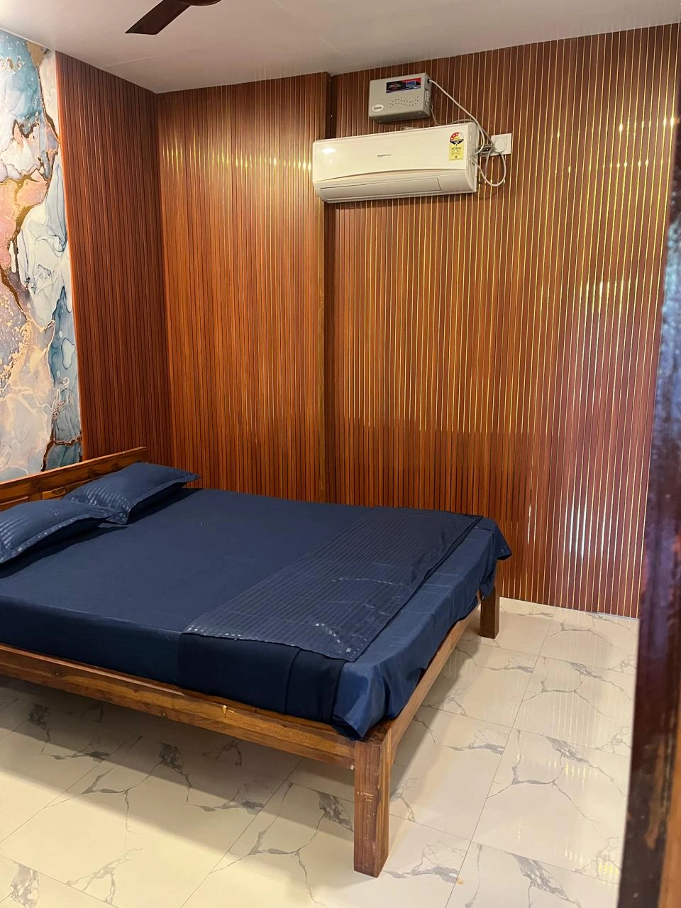

Quick travel guide
Fast transport planning is the first step for single-day travel queries.
A fast one-day guide helps catch users who are not sure whether they want a day trip or an overnight stay yet.

Fast transport planning is the first step for single-day travel queries.

A one-day plan usually needs one or two strong coastal stops instead of a packed list.

Many day-trip users later convert into weekend-stay users, so internal hotel links matter.
Dolphin House Beach Resort is linked for travelers who decide to extend their Alibaug day trip into an overnight stay.